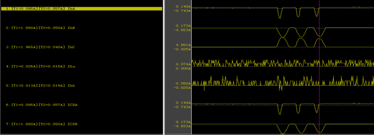
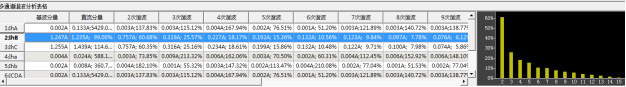
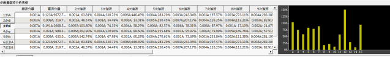

故障时间：2017年8月31日 10时14分34秒504毫秒
故障描述：备自投装置1#进线失压启动自投动作，101断路器动作，201断路器动作，202断路器,102断路器动作，B相差动保护装置保护启动动作，主变故障，备自投失败，装置被闭锁，1#进线失压。
启动类型：相电压突变启动
录波波形如下图：

故障分析：
依照差动闭锁逻辑和差动启动数据判断，在合闸瞬间谐波实际制动系数（二次谐波和基波的比值）为38.69/285.71=0.135，而实际定值当中二次谐波制动系数为0.15（经验值），其他闭锁判据详情分析如下表。
闭锁判据详情数据表
闭锁判据 | 数据结果 | 保护动作预测 |
差流二次按相制动 | MAX(ICDA2/ICDA1、ICDB2/ICDB1、ICDC2/ICDC1)≥KH2 | 差动闭锁 |
差流三次谐波闭锁 | MAX(ICDA3/ICDA1、ICDB3/ICDB1、ICDC3/ICDC1)≥KH3 | 差动闭锁 |
差流五次谐波闭锁 | MAX(ICDA5/ICDA1、ICDB5/ICDB1、ICDC5/ICDC1)≥KH5 | 差动闭锁 |
低压二次谐波闭锁 | Ila1>0.25*RAC且 Ila2/Ila1≥KH2 | 差动闭锁 |
谐波分析：故障谐波分析如下图

IhB通道谐波分析图

IhC通道谐波分析图
故障分析结论：
通过对保护设备存储的动作前数据进行图形化处理，并对数据进行谐波分析，发现IhA通道中存在大量非周期分量，并且有大量高次谐波分量，IhB和IhC通道也存在以二次和三次谐波为主的大量谐波分量。
这一特征与变压器涌流特征相吻合，并且用户二次谐波制动比例系数设置过低，由此可基本判断，此次动作为变压器励磁涌流导致，属于误动作，变压器内部无故障。